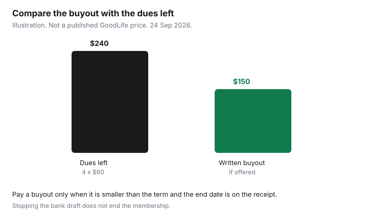

Subscriptions · Canada
How to Cancel a GoodLife Fitness Membership in Canada Without the Runaround
GoodLife bills until the membership agreement says it stops. The portal, the club desk, and the phone number are all real paths, and they do not all finish the same kind of membership. Read the agreement before you stand at the desk. A month-to-month membership and a paid-in-full commitment are different products. Stopping the bank draft without ending the membership is how a balance becomes a collections problem.
Ontario’s 10-day cooling-off, the one-year contract rule, and the renewal-notice window are the Ontario gym rights guide. If you are inside those rights, use them. This page is the GoodLife process around the contract you already have. Home equipment, if you leave a club, is an offer type at the end, not a reason to buy a rack on the way out.
Disclosure: Home workout gear is an offer type. Saving Optimizer may earn a commission if we later add a partner link. We do not currently claim a GoodLife, equipment, or fitness-app partnership. Education only. Not legal advice. Your agreement controls the fee.
Key takeaways
- Read the agreement. Employer-program FAQs describe paid-in-full as a one-year commitment you may not cancel early, and bi-weekly or monthly as month-to-month with one month’s notice through the Member Portal.
- Paths GoodLife publishes: the Member Portal after you log in, an associate at the club, and Member Experience at 1-800-387-2524, weekdays 9 a.m. to 5 p.m. Eastern. The contact page also lists members@goodlifefitness.com.
- Leave with the end date and the last draft in writing. A verbal “you’re cancelled” is not the file.
- If a buyout is offered inside a commitment, write the buyout next to the payments still owing. Do not pay a number you have not compared.
- Do not cancel only the pre-authorized debit. FCAC says that does not cancel the amount you owe.
Read your agreement: paid-in-full commitment vs biweekly/month-to-month notice
Log in and open the membership documents before you request a cancel. You are looking for three lines: whether you paid in full or by bi-weekly or monthly pre-authorized debit, the commitment end date, and the notice the agreement requires. GoodLife’s public contact page, used 24 Sep 2026, does not print those terms. They are on your agreement.
Employer corporate-program FAQs published for members of those plans, including a 2025 benefits-site PDF and earlier Canadian association PDFs, describe the same split. Paid-in-full is a one-year commitment, and those FAQs say you may not cancel before the commitment expires. Bi-weekly or monthly is month-to-month and continues until you terminate with one month’s advance notice through the Member Portal. Each member cancels their own membership. The employee does not cancel a family member’s membership for them. Treat that as a description of those corporate offers, then confirm the sentences on the PDF in your own account. A retail agreement can differ. The document with your name on it wins.
If you joined in Ontario and you are still inside 10 days of receiving the written contract, or the contract is missing terms the Consumer Protection Act requires, stop and use the Ontario cooling-off guide. A buyout conversation is the wrong tool inside a statutory cancel right. GoodLife is a commercial club. A YMCA or a municipal fitness centre is outside that Ontario rule. Do not paste one club’s script onto the other.
Cancel paths: Member Portal, club visit, Member Experience phone/chat
GoodLife’s contact page, used 24 Sep 2026, tells current members to use the Member Portal: log in, then My Account. It also says you can speak with an associate by calling your local club. The same page and the member account page list 1-800-387-2524, Monday to Friday, 9 a.m. to 5 p.m. Eastern, and the contact page lists members@goodlifefitness.com for a reply from the team. The member account page also points you to a fitness advisor at the front desk on your next visit. Logged-in chat is offered in that account area on the hours shown there. Use the channel while you are logged in so the agent can see the membership.
Practical order. Try the portal while logged in and look for a cancel or terminate request that names your membership. If the portal will not complete it, call 1-800-387-2524 or the club during the published hours, or go to the desk. Take the agreement, a piece of photo ID, and the PAD details. Ask for the cancel to be completed while you are there. Email to members@goodlifefitness.com can support the file. Do not treat a sent email, by itself, as the cancel, until a person confirms the end date. Members have described broken portal links and full phone queues in past years. The pages we read in September 2026 still list the portal, the club, the phone, and that email. If one path fails, use the next the same day and write down who you spoke to.
Corporate program questions on the employer FAQs also list 1-800-387-2524 and a corporate programs mailbox. Use the corporate channel when the issue is the employer rate. Use Member Experience when the issue is ending a membership. They are easy to mix up, and the wrong inbox is how a week disappears.
Get written confirmation and note the final payment date
The cancel is finished when you have writing that states the membership end date and the date of the last payment. That can be an email, a portal message, or a receipt from the club. Save it next to the agreement. Then look at the bank on that final date and one cycle later. A draft after the end date is a follow-up, with the confirmation attached, not a new negotiation.
Notice periods mean the last payment may still be in the future. One month’s notice, where the corporate FAQs require it, means at least one more draft. Write that draft on the calendar so it does not look like a mistake. If the confirmation says a different amount from the agreement, reply in writing the same day and ask which figure is correct. Do not wait until the draft posts.
Buyout fees inside a commitment period—calculate before you walk in
The contact page we read on 24 Sep 2026 does not publish a buyout price. The corporate FAQs we read say a paid-in-full commitment is not cancelled early. They do not list a dollar fee either. Older member discussions quote GoodLife contact copy that allowed a buyout of the remaining commitment for a fee. That sentence was not on the contact FAQ we fetched. So the rule for this draft is: do not assume a buyout exists, and do not assume it does not. Ask, and make them write the number down before you pay.
If they offer a buyout, put two numbers on paper. Remaining payments you would still owe if you kept the membership to the commitment end. The buyout they will accept today. Pay the buyout only if it is smaller and you are sure you will not use the club. A buyout equal to the remaining dues does not save money. It only ends access sooner. A buyout larger than the remaining dues is a worse deal than staying until the date you can cancel. Labelled illustration, not a GoodLife schedule: four months at $60 is $240 still owing. A written buyout of $150 is $90 less than paying the term out, if you will not attend. A written buyout of $300 is $60 more than finishing the term. You would keep the membership until the end unless you have a non-money reason to stop access now.

Do not pay a buyout at the desk in cash or on a card without the end date on the receipt. If they will not put the buyout and the end date in writing, do not pay it. Leave, and continue by phone or portal. Ontario members who are inside a statutory cancel right should not be paying a buyout at all.
Do not just stop PAD payments—collections risk
The Financial Consumer Agency of Canada says cancelling a pre-authorized debit does not cancel the contract and does not cancel the amount you owe. You have changed the payment method. The club can still treat the membership as active and the missed dues as a debt. That is the collections risk. Payments Canada says a biller must stop new PADs within the notice period in the agreement, not more than 30 days after you revoke, but that rule is about the payment method. It is not a membership cancel.
Order of operations: end the membership in writing, note the final debit, let that debit happen if it is the one you still owe, then watch the account. If a debit posts after the confirmed end date, send the confirmation to GoodLife and, if it is not fixed, ask your bank about a reimbursement. For a personal PAD that continued after you cancelled the payment agreement, FCAC gives you 90 days from the withdrawal to seek that reimbursement. Use the 90 days for a debit that should have stopped. Do not use a bank reversal as the way you quit a contract you still owe. The PAD hunt has the longer version.
Corporate membership quirks when employment ends
The corporate FAQs are specific, and they are the documents to re-read when the job ends. Paid-in-full memberships stay active for the rest of the prepaid commitment. Bi-weekly or monthly fees change to the non-discounted rate printed on the membership agreement. They do not silently end because payroll stopped. If you do nothing, the higher rate drafts from the payment method on file.
Those FAQs also say each person cancels their own membership, and the primary member cannot cancel a family member. The primary member can contact Member Experience to remove a family member’s billing. The family member’s rate then moves to the regular rate and needs its own payment method. If you are the family member, do not wait for the employee to “take care of it.” Log in and give notice yourself. If you are the employee, tell the household the date the discount dies so nobody is surprised by the new amount.
Registering for a corporate rate, when you are eligible, is a different action. GoodLife’s contact page says that if you register, the current membership updates to the discounted corporate rate. That is a price change, not a cancel. When the job ends later, you are back in the paragraph above. Put the employment end date on the same calendar as the membership renewal. A home setup is optional after you have actually cancelled. It is not a required replacement, and this page does not rank equipment.
Sources & date stamps
- GoodLife Fitness contact page and member account page, used 24 Sep 2026: Member Portal and My Account; local club associates; 1-800-387-2524, Monday to Friday 9 a.m. to 5 p.m. Eastern; members@goodlifefitness.com; front-desk help on the account page.
- Corporate-program member FAQs circulated by Canadian employers (including a 2025 benefits PDF and Canadian association PDFs): paid-in-full one-year commitment; bi-weekly or monthly with one month’s notice in the portal; each member cancels their own; rate changes to the agreement’s non-discounted price when corporate eligibility ends. Confirm against your copy.
- The contact page fetched 24 Sep 2026 did not publish a buyout amount. The $240 versus $150 chart is a labelled illustration.
- FCAC, pre-authorized debits, used 24 Sep 2026: cancelling a PAD does not cancel the contract or the amount owed; 90 days to seek reimbursement through your bank in the cases FCAC describes.
- Ontario gym statutory rights: ontario.ca, “Joining a gym or fitness club,” page updated 12 Aug 2021, used 24 Sep 2026. See the companion guide.
Frequently asked questions
Can I cancel GoodLife by email?
The contact page used 24 Sep 2026 lists members@goodlifefitness.com and says the team will reply. Keep that email. Treat the membership as cancelled when you have a written end date, from the portal, the club, or Member Experience. A sent message without that date is not the end.
What is the Member Experience number?
1-800-387-2524, Monday to Friday, 9 a.m. to 5 p.m. Eastern, as printed on GoodLife’s contact page used 24 Sep 2026. Call while you can log in, so they can see the account.
I am inside a one-year paid-in-full term. Can I just leave?
Corporate-program FAQs we read say you may not cancel a paid-in-full commitment before it expires. Ask whether a written buyout exists on your agreement, compare it with the months left, and do not pay a figure that is higher than finishing the term. Ontario statutory rights, if they apply, come first.
What if I stop the bank payments?
The gym can still say you owe the dues, and a collector may follow. End the membership first. Use the bank for a debit that posts after the confirmed end date.
I left my job. Does the corporate rate end itself?
On the corporate FAQs, paid-in-full runs to the end of the prepaid term. Bi-weekly and monthly plans reprice to the non-discounted rate on the agreement. Cancel yourself if you do not want that rate. Each adult cancels their own membership.